/// ACT18_AUTOPSY
> INF_CRIM // ACTIVIDAD_18 // HACKING_CASE...
Profesor: Servando Lopez Contreras
Jesús Israel Martínez Escobedo - 175325
La investigación forense: la huella digital de un cibercriminal
Informática Criminológica
Ingeniería en Tecnologías de la Información
Universidad Politécnica de San Luis Potosí
14 de noviembre de 2026
Objetivo
Analizar con Autopsy la imagen del disco de una laptop que se encontró abandonada y que se cree que usó Greg Schardt ("Mr. Evil") para robar datos en redes Wi-Fi públicas. La idea es sacar los datos principales del sistema y tratar de ligar la computadora con el sospechoso.
También sirve para practicar cómo se arma un caso en Autopsy, por qué es importante revisar el hash de la evidencia y cómo se lee el registro de Windows para encontrar información.
Caso: INV01UPSLP, número 01
Evidencia: laptop Dell CPi, serie VLQLW, encontrada el 20/09/2004
Sospechoso: Greg Schardt, alias "Mr. Evil"
Notas: Fraude (carding)
Imagen: SCHARDT.dd (8 partes unidas, 4.87 GB), Hacking Case del NIST
Herramientas: Autopsy 4.23.1, certutil, WinRAR
Metodología
Seguí los pasos en orden, porque en forense si te saltas algo la evidencia ya no sirve igual:
- Descarga de las 8 partes
- Unión con WinRAR
- Renombrar a SCHARDT.dd
- New Case INV01UPSLP
- Examinador y notas
- Organización UPSLP
- Disk Image or VM File
- Zona America/Chicago
- Todos los módulos
- Revisión del SCHARDT.LOG
- MD5 con certutil
- Comparación con referencia
- Data Artifacts
- Registros software y system
- Registro SAM
Al iniciar el análisis, Autopsy marcó error porque el módulo "Cyber Triage Malware Scanner" necesita licencia, y canceló todo. La imagen sí se agregó, así que volví a correr los módulos sin ese y ya funcionó.
Resultados
Parte I // Integridad y sistema
Hash de la imagen
Coincide con el hash de adquisición y verificación de referencia del caso: la imagen no se alteró.
Sistema operativo
Versión 5.1, build 2600, instalado en C:\WINDOWS.
Fecha de instalación
InstallDate = 1092955707 (22:48:27 UTC).
Zona horaria
UTC-6 normal; estaba activo el horario de verano (UTC-5).
Parte II // Dueño, equipo y cuentas
Propietario registrado
Valor RegisteredOwner del registro software.
Nombre de la computadora
Sale en Operating System Information.
Dominio principal
No estaba en un dominio de red. Usuario por defecto: Mr. Evil.
Último apagado
ShutdownTime en formato FILETIME (15:46:33 UTC).
Cuentas registradas
Administrator, Guest, HelpAssistant, Mr. Evil y SUPPORT_388945a0.
- Windows está registrado a nombre de Greg Schardt.
- La única cuenta creada por el usuario se llama "Mr. Evil", su apodo, y era la que entraba por defecto.
- La zona horaria es la del centro de EU, donde se encontró la laptop.
- Se instaló el 19/08/2004 y se apagó por última vez el 27/08/2004: se usó unos 8 días y luego se abandonó.
Evidencias
Capturas de cada paso, en orden.
01 // Creación del caso
Caso INV01UPSLP con su carpeta base.
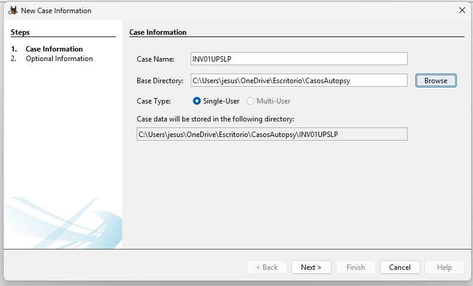
02 // Examinador y organización
Número 01, datos del examinador, notas y organización UPSLP.
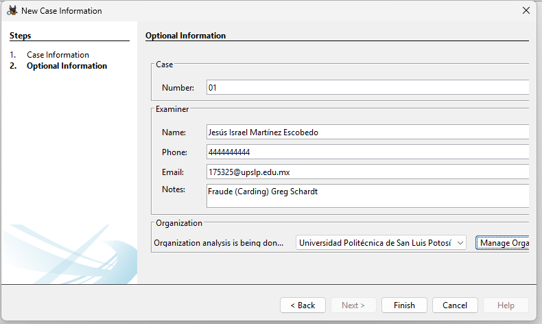
03 // Host
Se eligió "Generate new host name based on data source name".
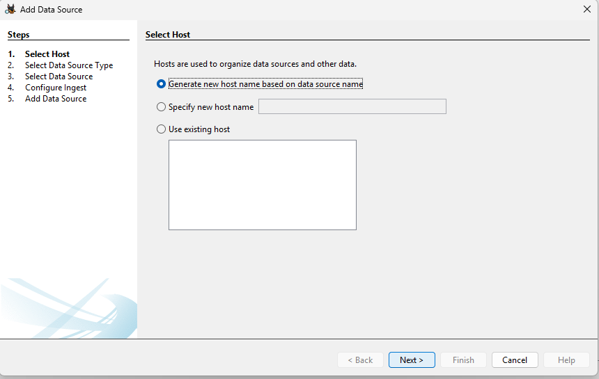
04 // Tipo de origen
Se eligió "Disk Image or VM File" porque la evidencia es una imagen de disco.
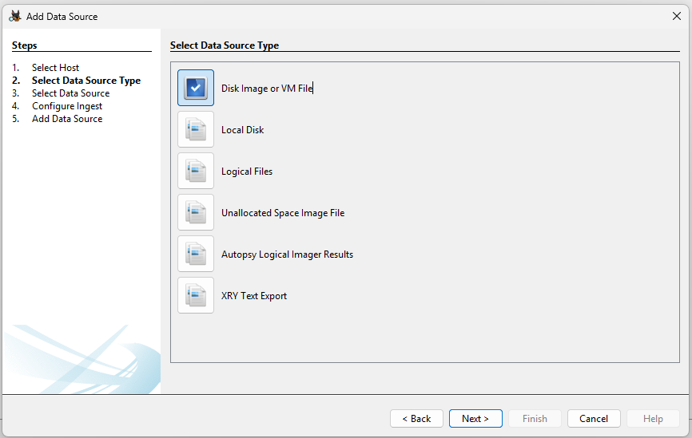
05 // Imagen y zona horaria
Archivo SCHARDT.dd con la zona America/Chicago.
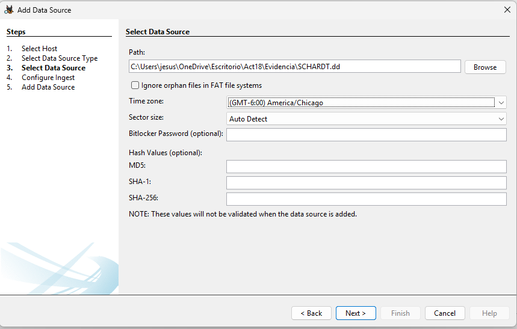
06 // Módulos de ingesta
Se marcaron todos los módulos, incluido Data Source Integrity.
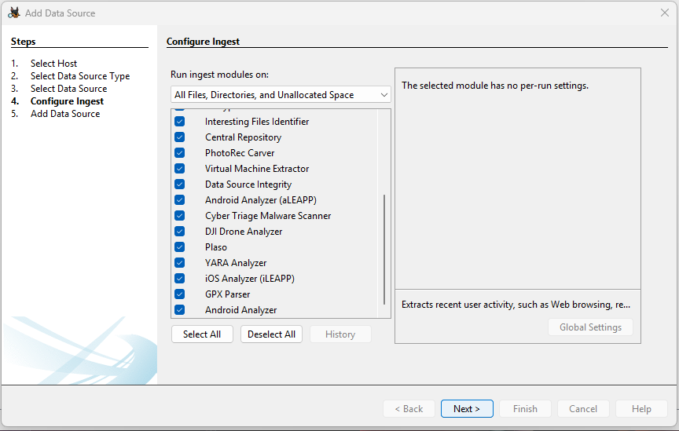
07 // Error de Cyber Triage
El módulo pidió licencia; se volvió a correr la ingesta sin él.
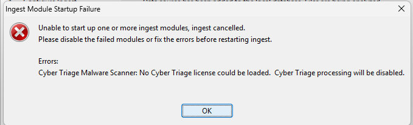
08 // Imagen cargada
Autopsy encontró una partición NTFS (vol2) y dos espacios sin asignar.
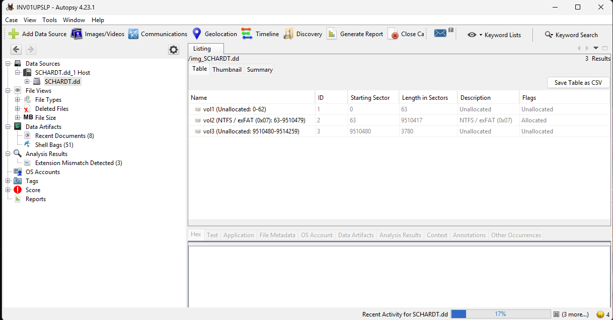
09 // SCHARDT.LOG
El log solo trae el MD5 de cada parte, no el de la imagen completa.
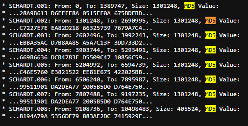
10 // Hash con certutil
Comando: certutil -hashfile SCHARDT.dd MD5
Resultado: aee4fcd9301c03b3b054623ca261959a, igual al de referencia.
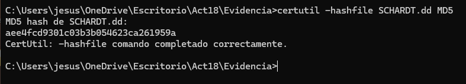
11 // Datos de la imagen
Imagen "Raw Single" de 4.87 GB con sectores de 512 bytes.
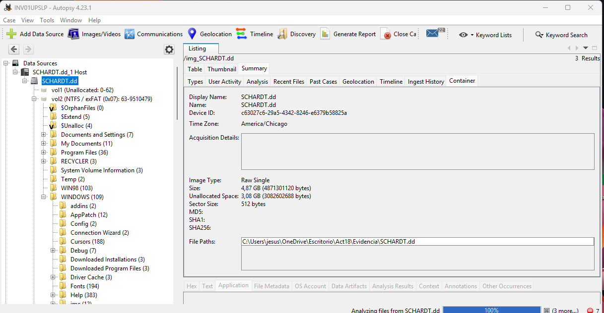
12 // Operating System Information
Windows XP, dueño Greg Schardt y equipo N-1A9ODN6ZXK4LQ.
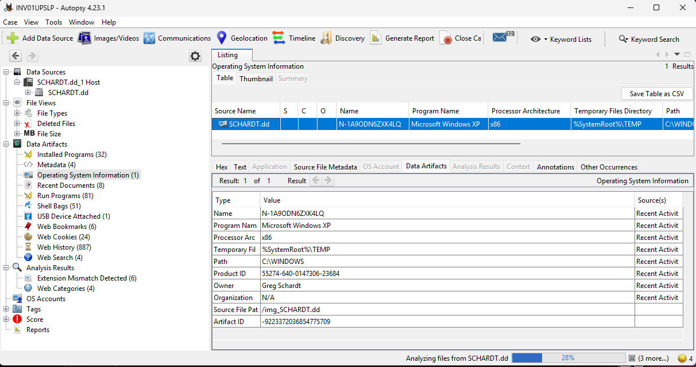
13 // Fecha de instalación
Registro software, CurrentVersion: InstallDate = 1092955707.
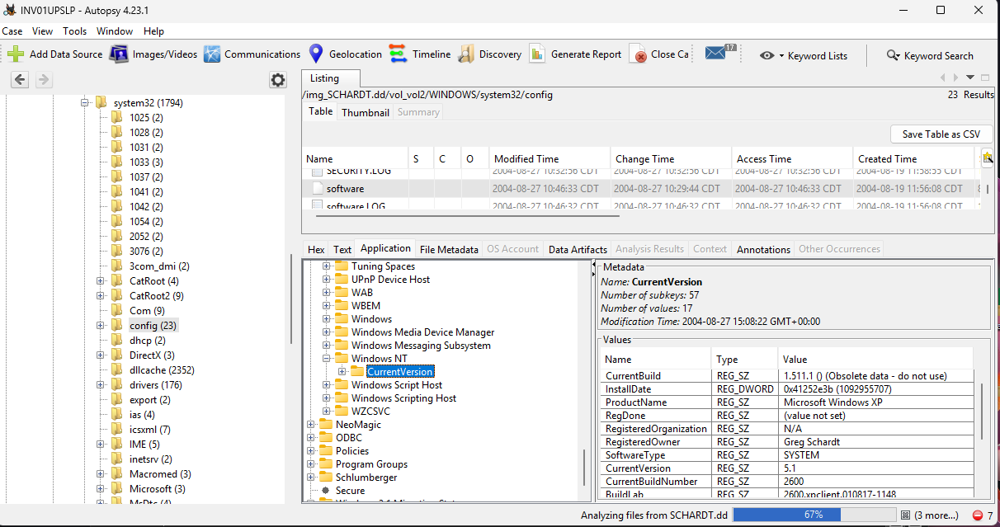
14 // Zona horaria
Registro system, TimeZoneInformation: Central Standard Time.
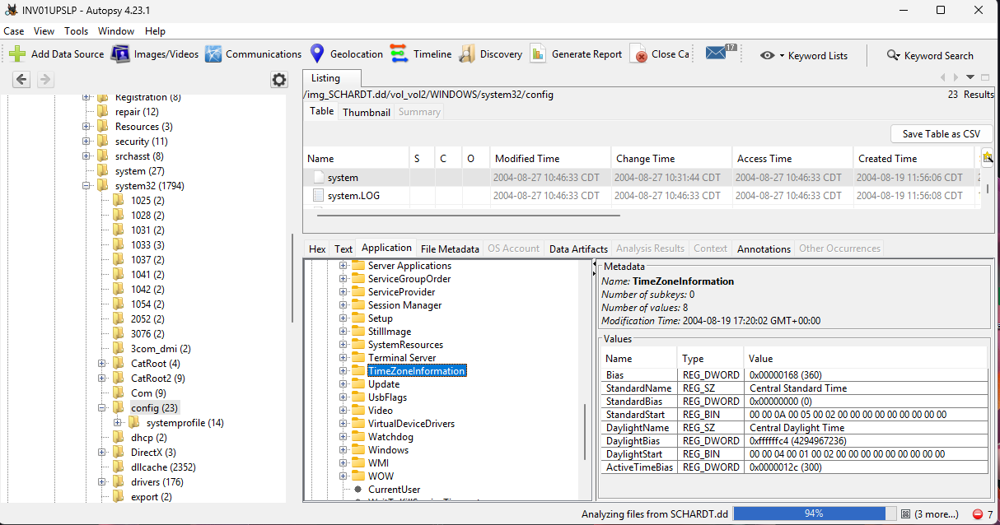
15 // Dominio y usuario por defecto
Registro software, Winlogon: dominio N-1A9ODN6ZXK4LQ y usuario Mr. Evil.
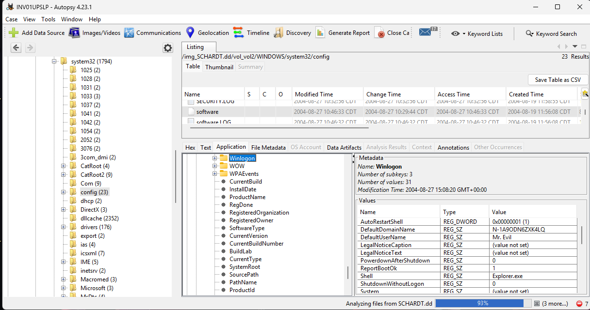
16 // Último apagado
Registro system, Control\Windows: ShutdownTime = C4 FC 00 07 4D 8C C4 01.
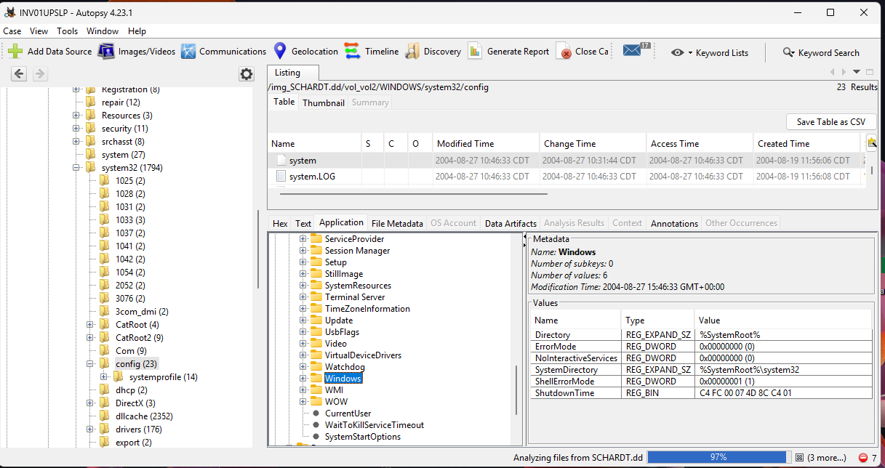
17 // Cuentas
En OS Accounts no salían todas, así que se revisó el registro SAM: 5 cuentas.
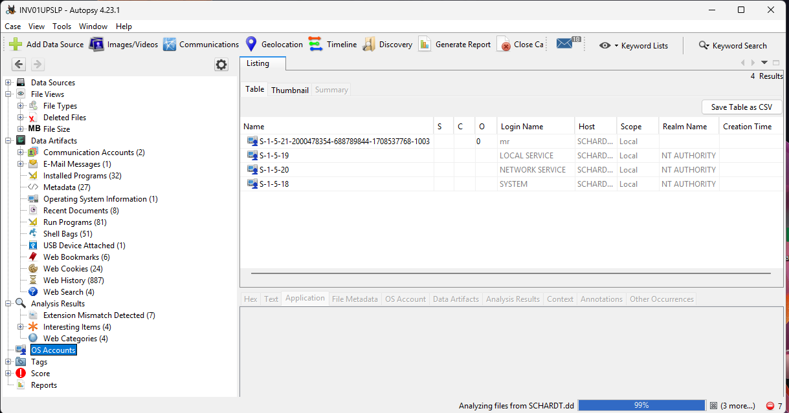
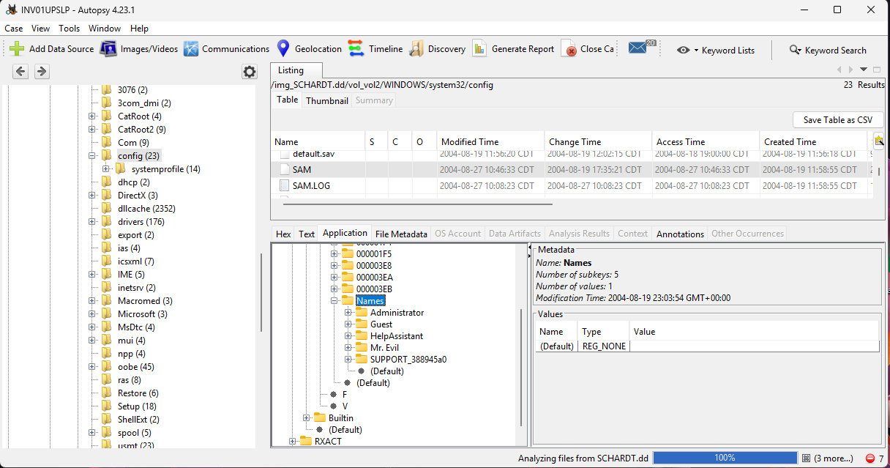
Entregables
Informe de la actividad.
Conclusión
Con Autopsy pude comprobar que la imagen está completa y sin cambios, y sacar del registro de Windows los datos principales de la laptop: Windows XP instalado el 19/08/2004 y apagado por última vez el 27/08/2004, con la zona horaria del centro de EU.
Lo más importante es que la compu está registrada a nombre de Greg Schardt y tiene una cuenta llamada "Mr. Evil", que es su apodo. Con eso la laptop queda ligada al sospechoso.
También me quedó claro que seguir los pasos en orden, revisar el hash y documentar todo con capturas es lo que hace que la evidencia sirva en un caso real.